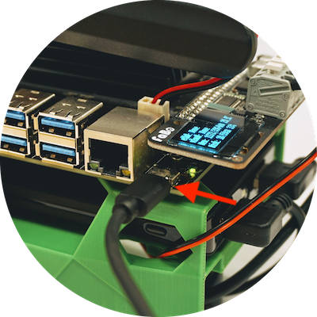

USB経由でJetBotに接続
最新のOS XやEdgeでは非対応
最新版のOSXや、Edgeでは、本接続用のDriverが標準では入っていません。
Wifiの接続
USBケーブルでPCとJetbotを接続します。


JetBotとPCをUSB接続すると、下記IPアドレスが割り振られます。
| 項目 | 値 |
|---|---|
| JetBot | 192.168.55.1 |
| PC | 192.168.55.100 |
ブラウザのからの接続
PCのブラウザで、
http://192.168.55.1:8888
と入力し、JetBotに接続します。
| Password |
|---|
| jetbot |